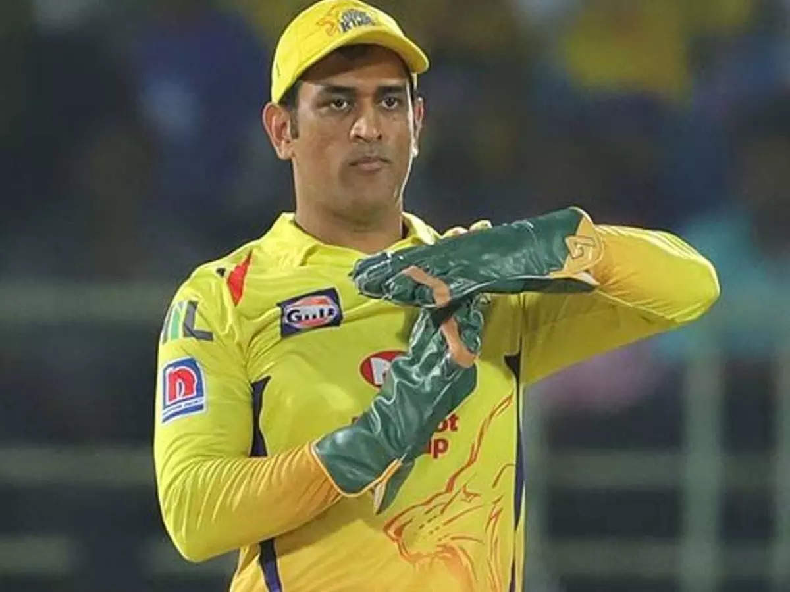

World's Best Captain
1. MS.DHONI
Mahendra Singh Dhoni, commonly known as MS Dhoni and Mahi, is an Indian cricket player and was a former captain of the Indian cricket team. Dhoni is a right-handed batsman.The Indian cricket team won the 2011 Cricket World Cup under his captainship. His Test cricket an One Day International records are the best of all Indian captains to date. He took over the ODI captaincy from Rahul Dravid in 2007 and led the team to its first ever inter-country ODI series wins in Sri Lanka and New Zealand. Dhoni also holds the post of Vice-President of India Cements Ltd. after resigning from Air India. India Cements is the owner of the Indian Premier League team Chennai Super Kings, and Dhoni has been its captain since the first edition of IPL.Dhoni was given many awards, such as the ICC ODI Player of the Year award in 2008 and 2009 (the first Indian player to achieve this), the Rajiv Gandhi Khel Ratna award in 2007 and the Padma Shri, India's fourth-highest civilian honour, in 2009. He retired from international cricket in 2020.
Mahendra Singh Dhoni, commonly known as MS Dhoni and Mahi, is an Indian cricket player and was a former captain of the Indian cricket team. Dhoni is a right-handed batsman.The Indian cricket team won the 2011 Cricket World Cup under his captainship. His Test cricket an One Day International records are the best of all Indian captains to date. He took over the ODI captaincy from Rahul Dravid in 2007 and led the team to its first ever inter-country ODI series wins in Sri Lanka and New Zealand. Dhoni also holds the post of Vice-President of India Cements Ltd. after resigning from Air India. India Cements is the owner of the Indian Premier League team Chennai Super Kings, and Dhoni has been its captain since the first edition of IPL.Dhoni was given many awards, such as the ICC ODI Player of the Year award in 2008 and 2009 (the first Indian player to achieve this), the Rajiv Gandhi Khel Ratna award in 2007 and the Padma Shri, India's fourth-highest civilian honour, in 2009. He retired from international cricket in 2020.

2. RICKY PONTING
Ponting was captain of the Australian national team during its "golden era", between 2004 and 2011 in Test cricket and 2002 and 2011 in One Day Internationals (ODIs) and is the most successful captain in international cricket history, with 220 victories in 324 matches with a winning rate of 67.91%. He is widely considered to be one of the best batsmen of the modern era and in December 2006 reached the highest rating achieved by a Test batsman for 50 years, although this was surpassed by Steve Smith in December 2017.He stands second in the list of cricketers by number of international centuries scored behind Sachin Tendulkar.Domestically Ponting played for his home state of Tasmania as well as Tasmania's Hobart Hurricanes in Australia's domestic Twenty20 competition, the Big Bash League. He played as a specialist right-handed batsman, an excellent slip fielder, as well as a very occasional bowler.
Ponting was captain of the Australian national team during its "golden era", between 2004 and 2011 in Test cricket and 2002 and 2011 in One Day Internationals (ODIs) and is the most successful captain in international cricket history, with 220 victories in 324 matches with a winning rate of 67.91%. He is widely considered to be one of the best batsmen of the modern era and in December 2006 reached the highest rating achieved by a Test batsman for 50 years, although this was surpassed by Steve Smith in December 2017.He stands second in the list of cricketers by number of international centuries scored behind Sachin Tendulkar.Domestically Ponting played for his home state of Tasmania as well as Tasmania's Hobart Hurricanes in Australia's domestic Twenty20 competition, the Big Bash League. He played as a specialist right-handed batsman, an excellent slip fielder, as well as a very occasional bowler.

3. SOURAV GANGULY
Sourav Chandidas Ganguly affectionately known as Dada, is an Indian cricket administrator, commentator and former national cricket team captain who is the 39th and current president of the Board of Control for Cricket in India (BCCI). He is popularly honoured as Maharaja of Indian Cricket. During his playing career, Ganguly established himself as one of the world's leading batsmen and also one of the most successful captains of the Indian national cricket team. While batting, he was especially prolific through the off side, earning himself the nickname God of the Off Side for his elegant stroke play square of the wicket and through the covers.As a cricketer he played as a left-handed opening batsman and was captain of the Indian national team. He was elected as a president of the BCCI in 2019.] and P resident of the editorial board with Wisden India. Before being elected as the President of BCCI, he was the President of Cricket Association of Bengal, governing body for cricket in West Bengal, India.
Sourav Chandidas Ganguly affectionately known as Dada, is an Indian cricket administrator, commentator and former national cricket team captain who is the 39th and current president of the Board of Control for Cricket in India (BCCI). He is popularly honoured as Maharaja of Indian Cricket. During his playing career, Ganguly established himself as one of the world's leading batsmen and also one of the most successful captains of the Indian national cricket team. While batting, he was especially prolific through the off side, earning himself the nickname God of the Off Side for his elegant stroke play square of the wicket and through the covers.As a cricketer he played as a left-handed opening batsman and was captain of the Indian national team. He was elected as a president of the BCCI in 2019.] and P resident of the editorial board with Wisden India. Before being elected as the President of BCCI, he was the President of Cricket Association of Bengal, governing body for cricket in West Bengal, India.

4.STEPFEN FLEMING
Stephen Paul Fleming is a New Zealand cricket coach and former captain of the New Zealand national cricket team, who is the current head coach of IPL team Chennai Super Kings. He is considered one of the greatest batsmen for the New Zealand national cricket team.Known for his astute tactical abilities, he is New Zealand's second-most capped Test player with 111 appearances. He is also the team's longest-serving and most successful captain, having led the side to 28 victories and having won Test series against India, England, West Indies, Sri Lanka, Bangladesh and Zimbabwe.He is the winning captain of the 2000 ICC KnockOut Trophy , which is New Zealand's only ICC trophy till date in the ODI format.[3] Fleming captained New Zealand in the historic first Twenty20 International of the world, which was played against Australia in 2005. He retired from international cricket on 26 March 2008.
Stephen Paul Fleming is a New Zealand cricket coach and former captain of the New Zealand national cricket team, who is the current head coach of IPL team Chennai Super Kings. He is considered one of the greatest batsmen for the New Zealand national cricket team.Known for his astute tactical abilities, he is New Zealand's second-most capped Test player with 111 appearances. He is also the team's longest-serving and most successful captain, having led the side to 28 victories and having won Test series against India, England, West Indies, Sri Lanka, Bangladesh and Zimbabwe.He is the winning captain of the 2000 ICC KnockOut Trophy , which is New Zealand's only ICC trophy till date in the ODI format.[3] Fleming captained New Zealand in the historic first Twenty20 International of the world, which was played against Australia in 2005. He retired from international cricket on 26 March 2008.

5.GREAME SMITH
Graeme Craig Smith (born 1 February 1981) is a South African cricket commentator and former cricketer who played for South Africa in all formats. In 2003, he was appointed captain of the national team, taking over from Shaun Pollock. He held the position of test captain until his retirement in 2014. At 22, he was appointed as South Africa's youngest ever captain. He was the most capped captain ever when he played his (personally not captained) 102nd test against England. He is considered as one of the greatest ever test captains of all-time having led South Africa to a record 54 test victories and under his captaincy South Africa was often highlighted as the best travelling team in the world. A tall, left-handed opening batsman, Smith is regarded as one of the greatest openers of all time. During South Africa's tour of England in 2003, he made double centuries in consecutive Test matches: 277 at Edgbaston, and 259 at Lord's. His 259 at Lord's still holds the record for being the highest score made by a foreign player at this prestigious venue. On 24 October 2013, Smith became the second South African and 12th overall to complete 9,000 runs in test cricket in his 112th test match.
Graeme Craig Smith (born 1 February 1981) is a South African cricket commentator and former cricketer who played for South Africa in all formats. In 2003, he was appointed captain of the national team, taking over from Shaun Pollock. He held the position of test captain until his retirement in 2014. At 22, he was appointed as South Africa's youngest ever captain. He was the most capped captain ever when he played his (personally not captained) 102nd test against England. He is considered as one of the greatest ever test captains of all-time having led South Africa to a record 54 test victories and under his captaincy South Africa was often highlighted as the best travelling team in the world. A tall, left-handed opening batsman, Smith is regarded as one of the greatest openers of all time. During South Africa's tour of England in 2003, he made double centuries in consecutive Test matches: 277 at Edgbaston, and 259 at Lord's. His 259 at Lord's still holds the record for being the highest score made by a foreign player at this prestigious venue. On 24 October 2013, Smith became the second South African and 12th overall to complete 9,000 runs in test cricket in his 112th test match.